Bean Bag Couch
Summary
This is a simple bean bag, designed for durability and comfort. It is built to last and also designed to be sewn entirely on a home sewing machine.
This page contains the patterns and instructions on how to put it together, from shaping the form in Blender to cutting, sewing, and filling the finished shell.
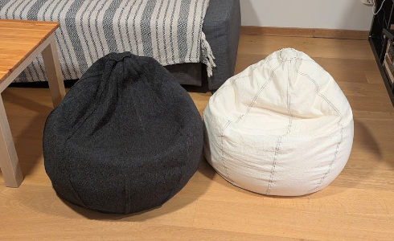
Design
The design started as a free form in Blender using a sphere. The lower area was pushed in and the top was pulled up to create a tear-drop shape that would feel supportive while still looking soft and relaxed.
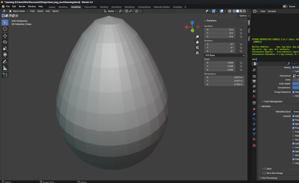
Blender was also used for scaling, volume calculations, and pattern unwrapping. The final shape was split into 8 vertical sections, and one of those sections was unwrapped to create the sewing pattern. The section height and the total volume were also calculated in Blender with Python.
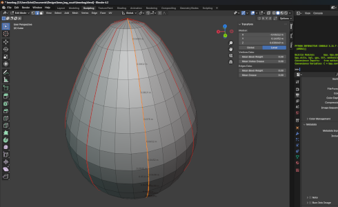
The script used for the Blender calculations is shown below:
# This is how to calculate the volume, for estimating the filling
import bmesh
import bpy
obj = bpy.context.object
bm = bmesh.new()
bm.from_mesh(obj.data)
print(bm.calc_volume(signed=False)) # 0.103 m^3 for a beanbag height of 0.7 m
# This estimates the length of selected edges.
# To calculate the length of one pattern,
# one vertical section should be selected before executing.
print(sum(e.calc_length() for e in bm.edges if e.select)) # 0.99 m for a beanbag height of 0.7 m
0.9888286255300045Downloads: panel-for-1m-height-couch.pdf and beanbag.blend.
Pattern Cutting
A cardboard stencil was first made in order to help cut the pattern accurately. The cardboard was taped to a wall and a projector was used to map the pattern onto it. After that, a sharp blade was used to cut the cardboard template.
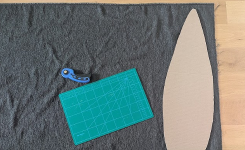
That cardboard pattern was then used for cutting the fabric pieces. A round blade was used for the fabric cutting. The thicker cardboard templates were cut one by one, while the thinner fabric was stacked 8 layers high and cut in one pass. An extra 15 mm margin was included before cutting to allow for the flat felled seams.
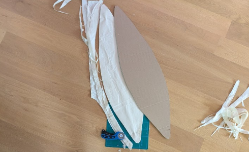
Sewing
The 8 body sections were joined together with flat felled seams for strength and durability. First, the pieces were sewn together with a straight seam. After that, one side of the seam allowance was trimmed slightly so the flat felled seam could be rolled cleanly around it.
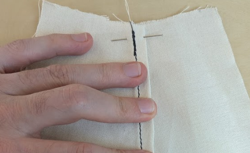
Once rolled, the seam was secured with pins and ironed to help it keep its form. The final top stitch for the flat felled seam was then sewn slowly and carefully.
The thicker fabric needed no ironing, since it was stiff enough to be kept in place by hand while sewing the flat felled seam.
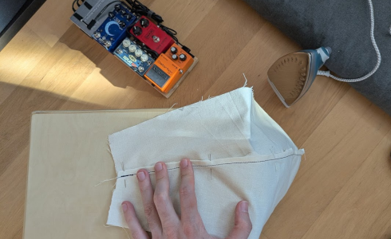
After all 8 sections were joined, balloons were used to fill the shell temporarily in order to inspect the form before closing it up further.
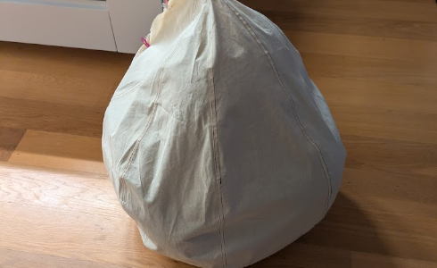
For the final side, only about 7 cm of the flat felled seam was sewn at the top and bottom. It is not possible to fully sew the final closing seam on a home sewing machine, so a zipper was added instead.
Before adding the zipper, the caps were made. The top and bottom meeting points of all 8 sections are naturally rough, so a neat round fabric piece with a diameter of about 10 cm was added to both the top and bottom as finishing caps. These caps were sewn on by hand using a backstitch.
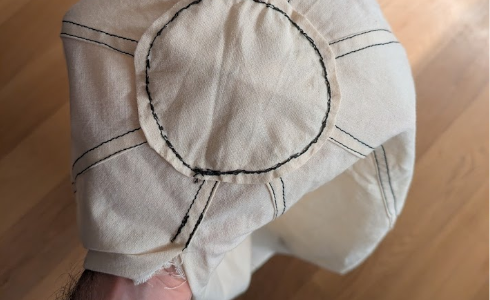
After the caps were installed, the zipper was added with extra reinforcement from a strip of nylon webbing for durability. The order is outer bean bag shell on top, then the zipper, then the nylon webbing reinforcement behind it. The zipper was secured much like the flat felled seams, with two parallel straight stitches, one on each side.
The zipper was first cut to size and secured on both ends so that the zipper pull could not escape. After that the zipper was closed and sewn to one side of the bean bag. It was then opened so that the sewing machine could gain access to the inside of the shell and sew it to the other side. With this strategy, all seams could be made with a sewing machine.
Here is the unfilled outer bag at the end of the sewing stage:
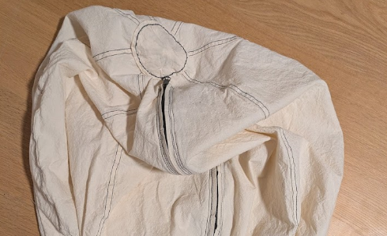
Filling
For the filling, I ordered inner liners together with EPS beads. The liner helps keep the filling contained, makes the final assembly easier to manage, and makes it easy to remove and wash the outer bean bag. When selecting an inner liner, it should be a bit larger than the couch itself. For the 0.7 m tall couch shown here, a 0.7 m wide by 0.8 m tall liner was a good fit.
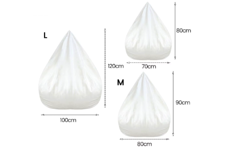
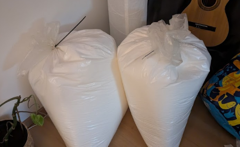
In practice, about 70 to 80 liters, or roughly 70 to 80% fill, was used for the bags. The bags should be filled to taste: more filling makes a firmer bag, while less filling makes it more malleable. It is important to add enough filling to at least keep the body away from the floor.
The filling process itself was done using an improvised paper funnel, which made it easier to guide the beads into the inner liner without making an even bigger mess than necessary.
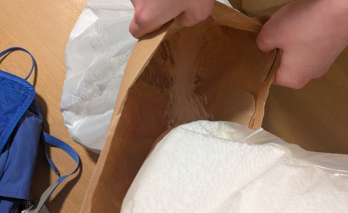
Epilogue
This should not be a very hard project for someone with some sewing experience, but it is on the demanding side because the flat felled seam has to be made along a curved section.
The finished couches are fun and comfortable. They work well both for floor sitting and as leg support when sitting on a couch. At about 0.7 m in height, they are a useful addition to a living room, offering comfort and utility without taking as much space as a jumbo bean bag.